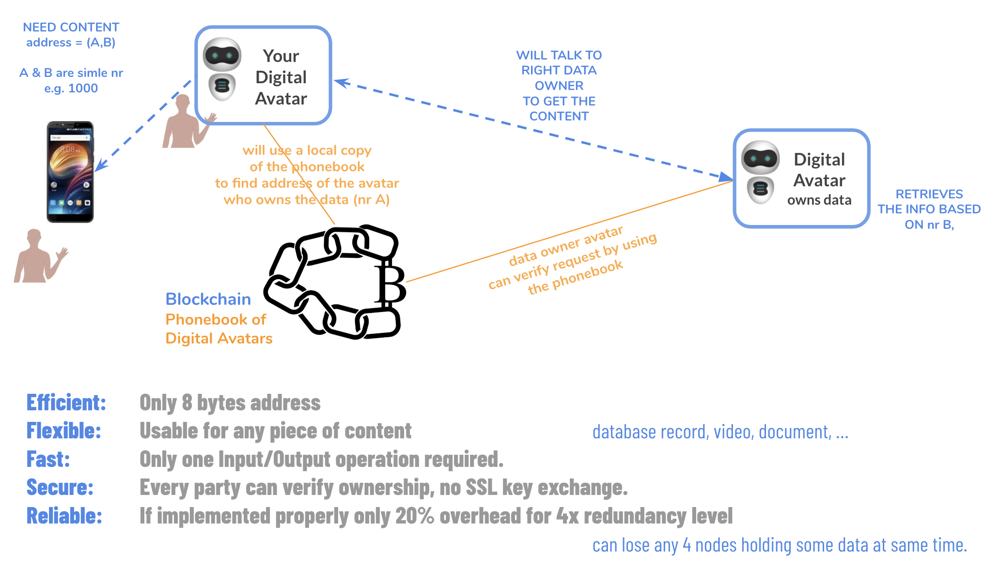

Technical
3Bot Technology
3Bot Features [picture of 3BOT]
- Identity Information
- Autonomous DAPPS SDK
- Serverless Core
- Email, chat, contacts, calendar
- Speaks to all legacy interfaces
- Up to petabytes of storage per 3Bot
- Video / Images
- Documents
- Structured Info (DB records)
- Browser In Browser
- FinTech Functionality
- Ultra Secure Wallet
- Decentralized Exchange
- Your Digital Life = Decentralized Apps
- E.g. Social Media
- Decentralized Video Conference System
- Your Virtual IT System Administrator
The ThreeFold system uses dispersed storage algorithms and is very different. The technology it uses was originally designed for communication in space. In a dispersed storage system the data gets dispersed in such a way that data will always be available even if 4 sites of the 20 (in this case) would not be available. Redundancy is the same as in the above example but the overhead is 20x less. It is also clear that security and efficiency is enhanced.
How is this "Space Algorithm" used by the 3Bot
By nature, 3Bot is stateless (has no data storage of its own). 3Bot owns digital currencies (ThreeFold Token or TFT) that can be used to reserve raw storage and compute resources on the grid.

3Bots have unique capabilities to use CPU and storage capacities from different TF Nodes on the TF Grid safely and reliably. 3Bots can store a petabyte of information as long as TFTs are available to reserve the required capacity on the individual TF Nodes. Data cannot be lost because of the above described dispersed storage algorithm. A 3Bot is the only entity that has the required information and keys to retrieve the data it distributed.
Jumpscale X: The automation platform which makes the 3Bot possible
Jumpscale is an automation framework written in Python. It has been developed for more than a decade and originates from an automation product that was acquired by SUN Microsystems from Q-Layer, which was one of our previous companies. Our newest release is version 10, called JSX.
Jumpscale is the foundation of the autonomous layer. To get to autonomous operations, IT experts have to model IT architectures. These models have to describe all the components involved in creating the architecture (e.g. a container running a webserver, a container running a database server, and then all the required network paths between these two containers and the rest of the world). Once this description is complete and tested, it can be given to the autonomous layer which launches, monitors, and operates the architecture by itself. Hence, autonomous IT.
BCDB
Our powerful Blockchain database.
The blockchain database has the following features:
-
Schemas (strongly typed)
-
3 types of indexing: key-based, full text search, and a full SQL compliant indexer
-
Multiple interfaces: REST, Redis, JavaScript client, GunJS, Python auto-generated client
-
Large and small objects can be stored (MBs to bytes)
-
All expected features from a blockchain are part of this product (e.g. immutability, verification, consensus, etc)
-
Encryption of data
-
We can guarantee full privacy for e.g. GDPR regulations (data is always 100% private, not shared)
-
ACLs = Access Control Lists
-
Multisignature
-
For validation of new data
-
For an update of data
-
For invalidation (like delete, but data never really goes away – just becomes invalid)
-
Supported interfaces: WebDav, Redis, REST

Depending on the type of required indexing, different support backend data storage or indexing systems will be used. The main supported backend storage device is Zero-DB.
BCDB is the most efficient information retrieval system possible

In the current Internet, retrieving information happens in two ways:
Centralized
-
Based on a URL (a unique resource locator), which is typically rather long
-
A URL can only be used in a centralized context. It has been designed for that purpose.
- *Example URL: *https://images.unsplash.com/photo-1555434992-f1670f5e8fce?ixlib=rb-1.2.1&ixid=eyJhcHBfaWQiOjEyMDd9&auto=format&fit=crop&w=934&q=80
-
Today +99% of all information is stored this way
-
You have to rely on the provider of the information (normally not the author) to deliver good uptime and enough connectivity to the Internet
Distributed
Blockchain or other distributed database
-
A long key e.g. 32 characters, or even 64
-
The data is distributed (sometimes replicated) over big areas – the data is not linked to the author but spread over a large area controlled by a blockchain or by a centralized application
-
The lookup process is typically slow – a special algorithm allows you to find the information in multiple steps, and there is no guarantee that the data is close to you when you need it.
In the suggested circular decentralized system there is only need for two numbers, to retrieve any information in the world. One number is to find which digital avatar to talk to, the other number is to find the information in the digital avatar of the data owner (can be human person or other legal entity).

Information can be a movie, for example, or a single piece of information like your email address. Each digital avatar is responsible for retrieving & reconstructing the information from the underlying IT capacity network (the nodes on a decentralized internet). This happens in a very secure way and the digital avatar is the only digital entity capable of re-assembling the information in such a way it makes sense again. This leads to very strong security.
With only two numbers any information in the world can be addressed.
This way of how to address information has far-reaching implications and can change the way how the Internet works.
Indexing & Search Problem

A difficult problem in a fully decentralized system is how to index and search for information.
When an author (in a company or private context) creates content, he or she needs to define access rights to one or more circles. If giving read access to the universe circle, it basically means everyone can retrieve the information. Each piece of information also needs labels – these are labels you freely choose and do not necessarily have a meaning outside of your own environment.
There are some automatic labels like type of document, creation date, or location of creation (e.g. photo).
An author can define which part of the document (if not all) is available for indexation.
In the TF Grid there are aggregation providers which are deployed (paid for) and owned by a specific 3Bot. These aggregation providers list themselves into the aggregator blockchain (BCDB).
Aggregator Examples:
-
Big data analysis tool
-
Company employee directory
-
AI tools
End user examples
-
A football club directory
-
A city merchants organization
Each aggregator is basically a 3Bot who gets rights to query indexing and/or the information behind.
Each 3Bot (as instructed by their owners) needs to inform the required aggregators to index/access the information (in a broad sense: video, address details, documents, news as stored in the 3Bot. The 3Bot can use a combination of labels and circles to do so.
Example:
-
You create blog articles about food and want to be listed on an aggregator site of healthy food.
-
You found this aggregation site because of consulting the aggregator blockchain (of course there are nice tools available to make this user-friendly).
-
You can now instruct your 3Bot to list all your relevant blog articles with labels "food" & “healthy” to that aggregator.
-
The aggregator will now receive instructions to index the information and list it in its own application to the intended audience.
-
The aggregator has the right to accept the information or not.
-
The aggregator can make a commercial business out of it and can decide to give part of the income to the original authors of the information using, for example, TFTs.
Important to note, the information itself does not get stored on the aggregator site, only when creating the index. The required index information is being provided and used to create the index. This means that sensitive information will stay on the author 3Bot, and only fields relevant for indexing will go to the aggregator.
This system is super scalable because aggregator sites by themselves are limited in scope and do pre-sorting of information people look for (e.g. an Uber alternative only makes sense in a certain region – there is no point to have a global Uber aggregation site). It's even possible to create aggregators of aggregator sites ie. Sites which make it easy to query information over multiple aggregators.
This leads to endless scalability
The above-suggested architecture scales endlessly. Millions of 3Bots = digital avatars can work with millions of nodes. The nodes provide the capacity, the digital avatars are the brain. There is no bottleneck in this architecture.

To find further information about 3Bot and technologies you can visit our whitepaper section on the ThreeFold Tech Wiki ThreeFold Tech Wiki